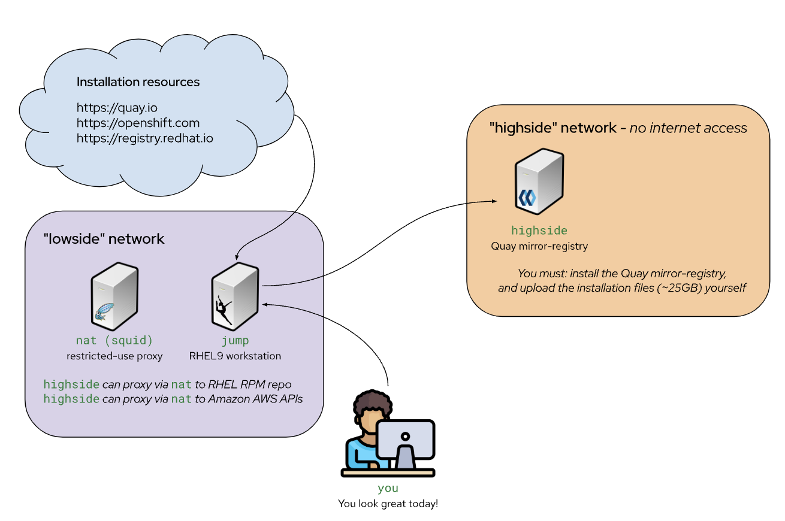
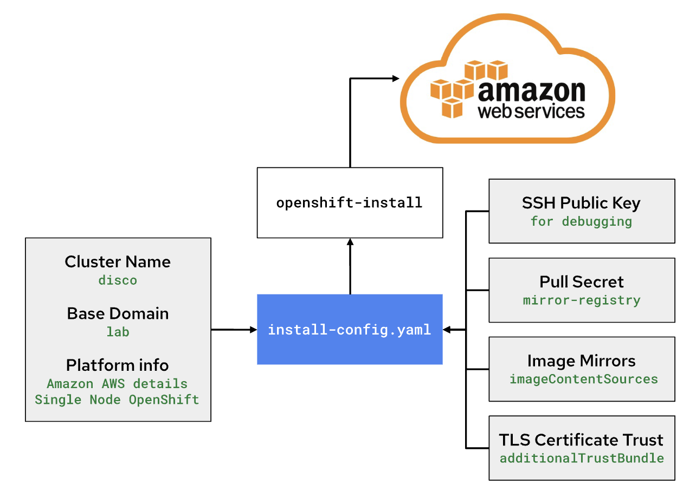

Disconnected Install of RHOAI
In a disconnected installation there are two sides to the network, a low side security network that can talk to the world wide web, and a high side security network that can talk to the OpenShift cluster and the low side network but can not talk to the world wide web.
The rest of this document will refer to the server that can manage with the disconnected OpenShift cluster as the high side and the server that can fetch various resources as the low side.
In general, it is required to download all the required resources on the low side and then upload them to the high side for use with the OpenShift cluster.
Syncing resources with OpenShift
Red Hat delivers a tool called oc-mirror to help with syncing images from registries to a private disconnected registry.
To learn more about oc-mirror visit oc-mirror.
This write up utilized oc-mirror v1; there is currently a newer version (v2) that is in technology preview
Steps to install RHOAI in disconnected cluster
Step 1: Prepare the low side
Download the required resources on the low side and then rsync them to the high side. The following resources are required:
-
oc-mirror- The OpenShift mirroring tool that will be used to download the images from the Red Hat Quay registry and then upload them to the mirror registrycurl -L -o oc-mirror.tar.gz https://mirror.openshift.com/pub/openshift-v4/clients/ocp/4.16.9/oc-mirror.tar.gz tar -xzf oc-mirror.tar.gz rm -f oc-mirror.tar.gz chmod +x oc-mirror sudo cp -v oc-mirror /bin/ -
mirror-registry - An image registry that serves container images to the OpenShift nodes. This is a smaller & streamlined version of the Red Hat Quay Image Registry
curl -L -o mirror-registry.tar.gz https://mirror.openshift.com/pub/cgw/mirror-registry/latest/mirror-registry-amd64.tar.gzWe will also download two additional tools that will be used later on the highside system.
-
openshift-install: The OpenShift Installercurl -L -o openshift-install.tar.gz https://mirror.openshift.com/pub/openshift-v4/clients/ocp/4.16.19/openshift-install-linux.tar.gz tar -xzf openshift-install.tar.gz openshift-install rm -f openshift-install.tar.gz -
oc: The OpenShift command line interfacecurl -L -o oc.tar.gz https://mirror.openshift.com/pub/openshift-v4/clients/ocp/4.16.19/openshift-client-linux.tar.gz tar -xzf oc.tar.gz oc rm -f oc.tar.gz sudo cp -v oc /bin -
Create a
ImageSetConfigurationfile to download required images. This file will be used by theoc-mirrortool to download the images from the Red Hat registry.kind: ImageSetConfiguration apiVersion: mirror.openshift.io/v1alpha2 archiveSize: 4 storageConfig: registry: imageURL: registry.example.com:5000/mirror/oc-mirror-metadata skipTLS: false mirror: operators: - catalog: registry.redhat.io/redhat/redhat-operator-index:v4.14 packages: - name: rhods-operator channels: - name: stable minVersion: 2.16.1 maxVersion: 2.16.1 additionalImages: - name: quay.io/modh/caikit-nlp@sha256:1871fde348098d29e355c7bc84b1588ed859d6a0a3e1dccf7f827158fc1a42b0 - name: quay.io/modh/caikit-tgis-serving@sha256:513c3d2132a3ef2618865ce03954fe9c3cac2296752bc8357b00aa5599936342 - name: quay.io/modh/codeserver@sha256:2f348af125f0acea8116c5629e6612a1f4df2bf83d2545a9d9e71467af6dd1c3 - name: quay.io/modh/codeserver@sha256:b0544754e3bb77f5445b30ec503e91e454310a1a5fcb44866c501bb5cff955c1 - name: quay.io/modh/codeserver@sha256:b1a048f3711149e36a89e0eda1a5601130fb536ecc0aabae42ab6e4d26977354 - name: quay.io/modh/cuda-notebooks@sha256:00c53599f5085beedd0debb062652a1856b19921ccf59bd76134471d24c3fa7d - name: quay.io/modh/cuda-notebooks@sha256:2d3acde5b71501c8c6677d98766542d695eb2c8b107d99d3d7e1d4cc7be338e7 - name: quay.io/modh/cuda-notebooks@sha256:3da74d732d158b92eaada0a27fb7067fa18c8bde5033c672e23caed0f21d6481 - name: quay.io/modh/cuda-notebooks@sha256:67ae98e94f1003832c008b9348b1ed4bbd187c48b408ee9298104d5dd37140fb - name: quay.io/modh/cuda-notebooks@sha256:6fadedc5a10f5a914bb7b27cd41bc644392e5757ceaf07d930db884112054265 - name: quay.io/modh/cuda-notebooks@sha256:88d80821ff8c5d53526794261d519125d0763b621d824f8c3222127dab7b6cc8 - name: quay.io/modh/cuda-notebooks@sha256:8d8a204a4378801289c912ed24c0ff2928e67c8f6fc9bcdd756205052ce2157b - name: quay.io/modh/cuda-notebooks@sha256:a484d344f6feab25e025ea75575d837f5725f819b50a6e3476cef1f9925c07a5 - name: quay.io/modh/cuda-notebooks@sha256:b1d46489ecccc7c067754155bf1c3a29b2f5dd40712fe23d562e074e80e82bc3 - name: quay.io/modh/cuda-notebooks@sha256:f6cdc993b4d493ffaec876abb724ce44b3c6fc37560af974072b346e45ac1a3b - name: quay.io/modh/kserve-agent@sha256:0498b62bf7edc701ee3589267c543d238b1a9a42c9319ca6713fdb191ed76882 - name: quay.io/modh/kserve-controller@sha256:7b8a872a801a3b4ddaf91330fa361ea7d245e16646a31af48b4c7c9c9294cace - name: quay.io/modh/kserve-router@sha256:020e02ca1f2c039597548ee91bac9cda7ad42981a55e2164ff9ce719324492c6 - name: quay.io/modh/kserve-storage-initializer@sha256:e745f50a8abbe412cdf5d868c5aeb4658f2042837d1d62c4825dac51bd7f40fb - name: quay.io/modh/odh-anaconda-notebook@sha256:380c07bf79f5ec7d22441cde276c50b5eb2a459485cde05087837639a566ae3d - name: quay.io/modh/odh-anaconda-notebook@sha256:acfa4bc06bbd0b4640844c5403272d6138070f391264dba238441c5dc64de505 - name: quay.io/modh/odh-base-rhel9@sha256:1d6f2e3c0ee7962d92c3b933f3bbfabeee24d314a2ce5f8ec2d9f18d5b6723d4 - name: quay.io/modh/odh-generic-data-science-notebook@sha256:39853fd63555ebba097483c5ac6a375d6039e5522c7294684efb7966ba4bc693 - name: quay.io/modh/odh-generic-data-science-notebook@sha256:76e6af79c601a323f75a58e7005de0beac66b8cccc3d2b67efb6d11d85f0cfa1 - name: quay.io/modh/odh-generic-data-science-notebook@sha256:7c1a4ca213b71d342a2d1366171304e469da06d5f15710fab5dd3ce013aa1b73 - name: quay.io/modh/odh-generic-data-science-notebook@sha256:b1066204611b4bcfa6172c3115650a8e8393089d5606458fa0d8c53633d2ce17 - name: quay.io/modh/odh-generic-data-science-notebook@sha256:e2cab24ebe935d87f7596418772f5a97ce6a2e747ba0c1fd4cec08a728e99403 - name: quay.io/modh/odh-habana-notebooks@sha256:4317c67037e1150fc62f8c688696d3210e4151d6ed4415dd969e60850e871c64 - name: quay.io/modh/odh-habana-notebooks@sha256:6923f084d66bf6b9b2bf87edfb9b3c1f8f9a5f2005482fbcc060c9872db8d28a - name: quay.io/modh/odh-minimal-notebook-container@sha256:39068767eebdf3a127fe8857fbdaca0832cdfef69eed6ec3ff6ed1858029420f - name: quay.io/modh/odh-minimal-notebook-container@sha256:4ba72ae7f367a36030470fa4ac22eca0aab285c7c3f1c4cdcc33dc07aa522143 - name: quay.io/modh/odh-minimal-notebook-container@sha256:4dba917e7fbeacfcc58ccb16e82540a77948790eb4b5b9f385364b8ff3e53840 - name: quay.io/modh/odh-minimal-notebook-container@sha256:9592b9aed5248b77c7490f08004091174030035a76c3b198f9f01c8be0060074 - name: quay.io/modh/odh-minimal-notebook-container@sha256:eec50e5518176d5a31da739596a7ddae032d73851f9107846a587442ebd10a82 - name: quay.io/modh/odh-pytorch-notebook@sha256:33c874b106fdaaa7c3c8b097152e59139c6f56035141e8c35a92df6351ab02af - name: quay.io/modh/odh-pytorch-notebook@sha256:806e6524cb46bcbd228e37a92191c936bb4c117100fc731604e19df80286b19d - name: quay.io/modh/odh-pytorch-notebook@sha256:97b346197e6fc568c2eb52cb82e13a206277f27c21e299d1c211997f140f638b - name: quay.io/modh/odh-pytorch-notebook@sha256:aaf5efdeb965abd7bb0fb330a3f63b58d86dd8bfd770335a371d296cb6ba50e2 - name: quay.io/modh/odh-pytorch-notebook@sha256:b68e0192abf7d46c8c6876d0819b66c6a2d4a1e674f8893f8a71ffdcba96866c - name: quay.io/modh/odh-trustyai-notebook@sha256:0d4e4445bd5ab80605d6e42c7211e5604484125794413bc9bd26b63fd0661726 - name: quay.io/modh/odh-trustyai-notebook@sha256:6ad1c753fdd8983dfc0fe90ea59899e67d2b3434dc78e5a4ce5e9d0073bc08b0 - name: quay.io/modh/odh-trustyai-notebook@sha256:8c5e653f6bc6a2050565cf92f397991fbec952dc05cdfea74b65b8fd3047c9d4 - name: quay.io/modh/odh-trustyai-notebook@sha256:fe883d8513c5d133af1ee3f7bb0b7b37d3bada8ae73fc7209052591d4be681c0 - name: quay.io/modh/openvino_model_server@sha256:e4ece481b8dd866163da7ffcd3e95389ef7fb3d32a9a0dbb056b07839652a4f7 - name: quay.io/modh/rocm-notebooks@sha256:69b82475cadb537aa212cb0be6535d918ed5f7d2413057abede143a2753a01f9 - name: quay.io/modh/rocm-notebooks@sha256:6b5a989689d710504fa3d56047310697680272c3ee831613796c48f5e30c19ca - name: quay.io/modh/rocm-notebooks@sha256:f4afbd1876949b0ad3ca044f583722abe37995d563a98761a5a49cc188bd292d - name: quay.io/modh/runtime-images@sha256:19ef5491d4dc059bbc93bb9e4e2579c5729ae65463771e32f325e3f925ac8363 - name: quay.io/modh/runtime-images@sha256:34a0aee985ff776d2004db9ef9d3e237366c1e6f1dc317901cac99bc81964809 - name: quay.io/modh/runtime-images@sha256:7d1b065f100666fe46f64a2e8aae888cb41a38b5482bb9b9343b14db05c2a14a - name: quay.io/modh/runtime-images@sha256:94f39c7e2ab06a104b63d5d0759afa24123a2d173dce3b77a85bbcb1c3c76c58 - name: quay.io/modh/runtime-images@sha256:a1cfb7bfcff3b2aae2b20b17da83b6683d632403f674a51af6efdfe809a6fc10 - name: quay.io/modh/runtime-images@sha256:a2f09f6095e3ba6bc6cf3b8d702fcdd4814f9d4c43e076795bfcdeb334ef9978 - name: quay.io/modh/runtime-images@sha256:ccc9b6c9d3f107988dc26deae607b792f3edbad03da53ee3a4698198f3aaab96 - name: quay.io/modh/runtime-images@sha256:d894c46832742b3d5772ccd478d2293644e344b1be41e0a967cc6cf58212182d - name: quay.io/modh/runtime-images@sha256:df1adec7e0623afd07fbe2d6fd6f759800d93c136c33a5b322ed347cbbbd70aa - name: quay.io/modh/runtime-images@sha256:e46fd90085206b1d77a18635db5784bca1f34e69c87ffbc13c6bffd65fd3c9d5 - name: quay.io/modh/ta-lmes-driver@sha256:5371c555cd9a71fd8b0db35c8a15e82b14a50d0757f347fbd943823dc839ba37 - name: quay.io/modh/ta-lmes-job@sha256:ed898711697e21aa4d9dc8c2a195c3f4eeaf0a433e02144f2bd171d5c0d20e13 - name: quay.io/modh/text-generation-inference@sha256:107a92426de8a1db544ffd0777044b11625d375d278a42baaa28eba1f14dfd18 - name: quay.io/modh/vllm@sha256:0d55419f3d168fd80868a36ac89815dded9e063937a8409b7edf3529771383f3 - name: quay.io/modh/vllm@sha256:9d1c865534a88f76375e09b47040e33429cd105971f806b8add7c367e75524bc - name: quay.io/modh/vllm@sha256:9fee00f366dc193ac12eea40fe058400a7f8a45438b7ce22a96b22932810cbc1 - name: quay.io/modh/fms-hf-tuning@sha256:6f98907f9095db72932caa54094438eae742145f4b66c28d15887d5303ff1186 - name: quay.io/modh/ray@sha256:2cdacde3f6f0ee5843b2f7151130b91c5dfec4cea3e470720722c2fdb0779495 - name: quay.io/modh/ray@sha256:0d715f92570a2997381b7cafc0e224cfa25323f18b9545acfd23bc2b71576d06 - name: quay.io/modh/ray@sha256:db667df1bc437a7b0965e8031e905d3ab04b86390d764d120e05ea5a5c18d1b4 - name: quay.io/modh/ray@sha256:f8b4f2b1c954187753c1f5254f7bb6a4286cec5a4f1b43def7ef4e009f2d28cb - name: quay.io/modh/training@sha256:b98e373a972ff6f896a9dc054d56920e915675339c02ea7fa123e0f4bbef4d74 - name: quay.io/modh/training@sha256:2efb6efba4ec08e63847d701e3062a5f6ddf51c91af5fbcef6378b9e6520a3bb - name: registry.redhat.io/rhelai1/instructlab-nvidia-rhel9@sha256:b3dc9af0244aa6b84e6c3ef53e714a316daaefaae67e28de397cd71ee4b2ac7e - name: quay.io/modh/must-gather@sha256:38577b4bdec00cffe424d6d373f2f1099f23bf72f84998fe1bf5dc54ccbdac1dRHOAI disonnected install helper will help you build the ImageSetConfiguration file. RHOAI Disonnected Install Helper
-
Mirror images to
low sideusingoc-mirrortool. This will download the images from the Red Hat registry and then upload them to the mirror registry. Atar filewill be created containing the images that will be used to load the mirror registry.oc-mirror --config imageset-config.yaml file://low-side
|
Ensure you have access to Red Hat Registry to download the images. A |
+
|
More information on disconnected mirroring can be found in the OpenShift documentation. OpenShift Disconnected Installation Mirroring |
Step 2: Prepare the high side
-
The
highsidesystem needs to be setup to run an image registry inside the disconnected network. OpenShift provides a mirror-registry that is purpose-built for this task. The mirror-registry is a simplified, and portable, version of Red Hat’s Quay Image Registry. -
You can use any image registry that supports the Docker v2 API, uses TLS encryption, and requires authenticated image pulls. Examples of alternative image registries include.
-
Harbor
-
JFrog Artifactory
-
Sonatype Nexus Repository
-
Red Hat Quay Registry (enterprise)
-
-
Transfering the installation content to the highside system using rsync
rsync -avP low-side-data/mirror-registry.tar.gz highside:high-side-data/ -
Uploading OpenShift’s installation images into
mirror-registry -
Upload OpenShift installation images into the
mirror-registrysudo mv -v high-side-data/oc /bin/ sudo mv -v high-side-data/oc-mirror /bin/ sudo mv -v high-side-data/openshift-install /bin/ -
Use
oc-mirrorto upload the images into themirror-registryoc-mirror --from=high-side-data/mirror_seq1_000000.tar docker://$(hostname):8443 -
Install Red Hat OpenShift on the
high-sidesystem.-
Provide your disconnected
pull secret -
Identify your disconnected
mirror-registry -
Trust the mirror-registry’s TLS certificate
install-config.yamlapiVersion: v1 metadata: name: disco baseDomain: lab compute: - architecture: amd64 hyperthreading: Enabled name: worker replicas: 0 controlPlane: architecture: amd64 hyperthreading: Enabled name: master replicas: 1 networking: clusterNetwork: - cidr: 10.128.0.0/14 hostPrefix: 23 machineNetwork: - cidr: 10.0.0.0/16 networkType: OVNKubernetes serviceNetwork: - 172.30.0.0/16 platform: aws: region: us-east-2 subnets: - subnet-0b39c483c45355b10 publish: Internal additionalTrustBundlePolicy: Always
The pull secret that gets added to a disconnected installation’s install-config.yaml is only required to provide credentials for the mirror-registry
-
-
Add ImageContentSourcePolicy to the
install-config.yamlfile. This is required to tell OpenShift where to find the images in the disconnected environment.The imageContentSources: lines tell OpenShift that its installation images should be pulled from your mirror-registry instead of from quay.iocat install-config.yaml imageContentSources: $(grep "mirrors:" -A 2 --no-group-separator high-side-data/oc-mirror-workspace/results-*/imageContentSourcePolicy.yaml) -
Add the Root CA of your mirror-registry to the install-config.yaml file by running this command:
cat high-side-data/install-config.yaml additionalTrustBundle: | $(sed 's/^/ /' /home/quay-install/quay-rootCA/rootCA.pem) -
Run the
openshift-installcommand.openshift-install create cluster --dir /mnt/high-side-data -
Continue with day-2 activities
-
Disable the default OperaterHub locations since the cluster can’t reach out to them.
oc patch OperatorHub cluster --type json -p '[{"op": "add", "path": "/spec/disableAllDefaultSources", "value": true}]' -
oc-mirror will create catalog source.
Sample CatalogSource.yamlapiVersion: operators.coreos.com/v1alpha1 kind: CatalogSource metadata: name: cs-redhat-operator-index namespace: openshift-marketplace spec: image: ip-10-0-54-104.us-east-2.compute.internal:8443/redhat/redhat-operator-index:v4.14 sourceType: grpc -
Configure OCP to pull from the mirror-registry
-
-
Red Hat OpenShift has a concept called
Image Source Content Policy(ISCP),Image Digest Mirror Set(IDMS) andImage Tag Mirror Set(ITMS).oc-mirror (v1) will generate an ISCP. However, ISCP is being deprecated in favor of IDMS and ITMS. The difference between an IDMS and ITMS is simply one will redirect only for digests (IDMS) and the other only for tags (ITMS). The deprecated ISCP will only do digests.
To convert the generated ISCP to IDMS.
This will create a new IDMS file.oc adm migrate icsp <file_name>.yaml <file_name>.yaml <file_name>.yaml --dest-dir <path_to_the_directory>More information about the
ImageContentSourcePolicyandImageDigestMirrorSetcan be found in the OpenShift documentation. Convert ImageContentSourcePolicy for image registry repository mirroringSample OutputapiVersion: config.openshift.io/v1 kind: ImageDigestMirrorSet metadata: name: generic-0 spec: imageDigestMirrors: - mirrorSourcePolicy: NeverContactSource mirrors: - ip-10-0-54-104.us-east-2.compute.internal:8443/openshift4 source: registry.redhat.io/openshift4 - mirrorSourcePolicy: NeverContactSource mirrors: - ip-10-0-54-104.us-east-2.compute.internal:8443/modh source: quay.io/modh - mirrorSourcePolicy: NeverContactSource mirrors: - ip-10-0-54-104.us-east-2.compute.internal:8443/rhoai source: quay.io/rhoai - mirrorSourcePolicy: NeverContactSource mirrors: - ip-10-0-54-104.us-east-2.compute.internal:8443/rhel8 source: registry.redhat.io/rhel8 - mirrorSourcePolicy: NeverContactSource mirrors: - ip-10-0-54-104.us-east-2.compute.internal:8443/integreatly source: quay.io/integreatly -
You have to create ImageTagMirrorSet to pull images by Tag.
Sample ImageTagMirrorSet.yamlapiVersion: config.openshift.io/v1 kind: ImageTagMirrorSet metadata: name: generic-0 spec: imageTagMirrors: - mirrorSourcePolicy: NeverContactSource mirrors: - ip-10-0-54-104.us-east-2.compute.internal:8443/openshift4 source: registry.redhat.io/openshift4 - mirrorSourcePolicy: NeverContactSource mirrors: - ip-10-0-54-104.us-east-2.compute.internal:8443/gogs source: registry-1.docker.io/v2/gogs - mirrorSourcePolicy: NeverContactSource mirrors: - ip-10-0-54-104.us-east-2.compute.internal:8443/rhpds source: quay.io/rhpds - mirrorSourcePolicy: NeverContactSource mirrors: - ip-10-0-54-104.us-east-2.compute.internal:8443/kubebuilder source: gcr.io/kubebuilder - mirrorSourcePolicy: NeverContactSource mirrors: - ip-10-0-54-104.us-east-2.compute.internal:8443/rhel8 source: registry.redhat.io/rhel8 - mirrorSourcePolicy: NeverContactSource mirrors: - ip-10-0-54-104.us-east-2.compute.internal:8443/minio source: quay.io/minioMore information about ImageTagMirrorSet can be found in the official documentation: ImageTagMirrorSet
Common issues in disconnected installations
-
The disconnected installation requires a lot of resources. Make sure you have enough CPU and memory on the
high sideto run the OpenShift cluster. -
The mirroring process utilizes a large amount of disk space during this process, we required 250GB of available disk space for downloading the images, creating the oc-mirror workspace and finally the tar containing the images for loading the mirror. On the high side, we required at least 450 GB.
-
The oc-mirror process is very slow, it took us 8 hours to download the images and create the tar file. Make sure you have enough time to complete the process.
Pre-requisites to install ai-accelerator in disconnected cluster
-
We need kustomize on
high-sideby downloading onlow-sideand then rsync it up. For example:curl -s "https://raw.githubusercontent.com/kubernetes-sigs/kustomize/master/hack/install_kustomize.sh" | bash rysnc -avP /mnt/low-side-data/ highside:/mnt/high-side-data/ -
On high side put kustomize on the path, for example:
sudo cp /mnt/high-side-data/kustomize /bin/ -
We need an instance of
giteato cloneai-acceleratorand for ArgoCD. For POC, we are using gitea-operator to installgiteaon the OpenShift cluster. The following is a sampleGiteaCR file that can be used to installgiteaon the OpenShift cluster.apiVersion: pfe.rhpds.com/v1 kind: Gitea metadata: name: simple-gitea namespace: gitea spec: giteaImageTag: 1.20.0 giteaVolumeSize: 4Gi giteaSsl: false postgresqlVolumeSize: 4Gi giteaAdminUser: user giteaAdminEmail: user@redhat.com giteaAdminPassword: usercredential
Known issue when installing ai-accelerator in disconnected cluster
-
Certificate error while downloading models from model storage or external storage. This error is seen when the certificates to be trusted are missing from cluster wide certificate authority bundle.
Error message:Failed to pull model from storage {"model_id": "fraud_", "error": "rc error: code = Unknown desc = Failed to pull model from storage due to error: unable to list objects in bucket 'my-storage': RequestError: send request failedincaused by: Get \"htts://xxxxxxx\": *509: certificate signed by unknown authority"}Steps to resolve the certificate error$ oc get secret -n openshift-ingress-operator router-ca -o jsonpath='{.data.tls\.crt}' | base64 -d > openshift-ca-bundle.pem $ oc get configmap -n openshift-config openshift-service-ca.crt -o jsonpath='{.data.service-ca\.crt}' >> openshift-ca-bundle.pem $ CA_BUNDLE_FILE=./openshift-ca-bundle.pem $ oc patch dscinitialization default-dsci --type='json' -p='[{"op":"replace","path":"/spec/trustedCABundle/customCABundle","value":"'"$(awk '{printf "%s\\n", $0}' $CA_BUNDLE_FILE)"'"}]'For More information on certificates: Working with certificates
-
Image Pull back off when starting a pipeline. This error is seen when the images are not available in the cluster registry.
Error message:Pulling image "image-registry/rhoai/odh-data-science-pipelines-argo-workflowcontroller-rhel8@sha256:67de22353f12e748992dc4b762eb3818e63c55fc414537b2acdc9a536f9ad308" Error: ImagePullBackOffSteps to resolve the image pull back off-
Identify the missing images
-
Pull the images from the Red Hat registry using
oc-mirror. -
Use
oc-mirrorto create a tar file containing the images and load them into the cluster registry. -
Use
oc-mirrorto create a catalog source for the images. -
Update
ImageContentSourcePolicyandImageTagMirrorSetorImageDigestMirrorSetto point to the new catalog source.
-
Hands-on disconnected workshop
If you are interested in a hands-on workshop on how to install Red Hat OpenShift AI in a disconnected environment, you can provision Disconnected Environment on the Red Hat Demo Center. This environment is a fully disconnected environment. You can use this environment to test, modify ImgeSetConfiguration.yaml and learn how to install OpenShift AI in a disconnected environment.